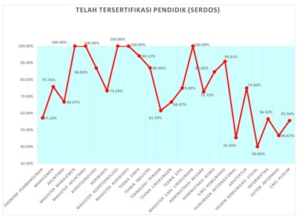
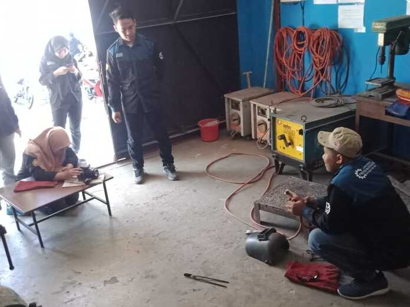

Grafik Sertifikasi Dosen UPN Veteran Jawa Timur TA 2019/2020
Grafik Sertifikasi Dosen UPN Veteran Jawa Timur TA 2019/2020. Dosen Ekonomi Pembangunan, Manajemen, Akuntansi, Magister Manajemen, Magister Akuntansi, Agrotekologi, Agribisnis, Magister Agroteknologi, Magister Agribisnis, Teknik Kimia
Read more

Kegiatan lab. Proses Produksi Teknik Industri
Mahasiswa konsentrasi mengikuti praktikum di Lab. Proses Produksi Teknik Industri dimana kebutuhan semakin tenaga kerja semakin meningkat dan untuk menjawab kebutuhan stage holder di instansi swasta atau di instansi milik pemerintah
Read more